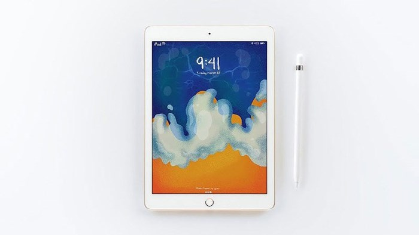

Bộ ba ứng dụng soạn thảo văn bản Pages, bảng tính Numbers và trình chiếu Keynote đều được nâng cấp hỗ trợ dùng bút Pencil để ghi chú. Thậm chí, ứng dụng Pages giờ còn có thể sử dụng như sách điện tử, dễ dàng chú thích, chèn thêm hình ảnh hay video minh hoạ cho việc giảng dạy... Hãng công nghệ Mỹ cho biết kho ứng dụng iOS của họ giờ đã có khoảng 200.000 ứng dụng trong lĩnh vực giáo dục. Với vi xử lý A10 Fusion và nền tảng iOS, iPad mới cũng được tối ưu cho các ứng dụng tương tác thực tế tăng cường.
Thời lượng pin lên đến 10 tiếng, Camera sau 8mp quay video HD 1080p, cảm biến Touch ID. Nặng 453gram, độ dầy 7,5mm.